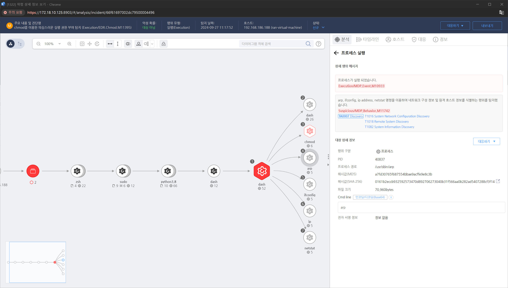

T1016.000.03 네트워크 구성 정보 식별
D3FEND
MITRE ATT&CK 액션을 기준으로 대응 방안을 작성
Detection
Action = "ProcessCreate" AND
TargetProcess = "arp" OR "ipconfig" OR "ip" OR "netstat"
Detection(EDR)

Response
해당 행위를 수행한 프로세스를 종료합니다.
Mitigations
네트워크 설정 제한 및 보호
- 네트워크 설정 접근 제한: 시스템의 네트워크 구성 정보(예: IP 주소, 라우팅 테이블, 네트워크 인터페이스 등)에 대한 접근을 제한하여 일반 사용자나 비관리자 계정이 이를 확인할 수 없도록 설정합니다.
- 네트워크 서비스 최소화: 시스템에 불필요한 네트워크 서비스가 실행되지 않도록 하고, 포트 및 프로토콜 제한을 통해 공격자가 접근할 수 있는 네트워크 포트를 최소화합니다.
보안 솔루션 강화
- EDR/XDR 솔루션을 사용하여 네트워크 구성 정보를 조회하려는 의심스러운 활동을 탐지합니다.
- IDS/IPS를 통해 비정상적인 네트워크 탐지 요청이나 의심스러운 패턴을 모니터링하고 경고를 생성합니다.
- Firewall을 통해 외부에서 들어오는 트래픽을 차단하고, 내부 네트워크의 세그먼트를 보호합니다.
이벤트 로깅 및 감사 정책 강화
- Windows Event Log에서 네트워크 구성 변경과 관련된 이벤트를 추적하고 모니터링하여 비정상적인 네트워크 접근 시도를 감지합니다.
- Audit Policy를 활성화하여 네트워크 설정 변경,
ipconfig, netstat, route, Get-NetAdapter 등 네트워크 구성 조회 명령어 사용을 로깅합니다.
- SIEM 시스템을 사용하여 네트워크 설정 변경에 대한 실시간 알림을 설정합니다.
네트워크 접근 제어
- 네트워크 세분화 및 분리: 내부 네트워크를 여러 서브넷으로 분리하여, 각 네트워크 구간에 대한 접근을 제어합니다.
- 네트워크 접속 제어: 네트워크 접근 제어(NAC) 솔루션을 사용하여, 네트워크 장비와 시스템의 연결을 제어하고, 인증되지 않은 장치가 네트워크에 접근하는 것을 차단합니다.
- VPN 및 MFA: 원격 접근이 필요한 경우 VPN과 다단계 인증(MFA)을 적용하여 안전한 네트워크 연결을 보장합니다.
최소 권한 원칙 적용
- 관리자 권한 최소화: 네트워크 구성 정보를 조회할 수 있는 권한을 관리자로 제한하고, 비관리자 계정에 대해서는 네트워크 설정을 확인하거나 수정할 수 없도록 권한을 제한합니다.
- 로컬 그룹 정책 설정: 사용자 계정에 대한 권한을 제한하여
ipconfig, netstat, route 등과 같은 네트워크 관련 명령어를 사용할 수 없도록 설정합니다.
정기적인 보안 점검 및 패치 적용
- 시스템과 네트워크 장비에 대한 보안 패치를 정기적으로 적용하여 알려진 취약점이 악용되지 않도록 합니다.
- 네트워크 인프라 점검: 네트워크 장비(스위치, 라우터 등)의 구성을 점검하여, 불필요한 포트가 열려 있지 않거나, 취약한 설정이 없는지 확인합니다.
서비스 및 프로세스 모니터링
- 네트워크 서비스 모니터링: 시스템에서 실행 중인 네트워크 관련 서비스(예: DHCP, DNS 등)에 대한 활동을 모니터링하고, 비정상적인 요청이나 서비스 구성을 탐지합니다.
- 메모리 및 시스템 상태 점검: 메모리 덤프나 시스템 상태를 정기적으로 점검하여 의심스러운 네트워크 관련 프로세스를 식별하고, 악성 활동을 차단합니다.
Affected Techniques
Action 실행시 함꼐 영향을 받는 다른 Techniqes
| D3FEND |
| D3-NTPM Network Traffic Policy Mapping |
| D3-PLM Physical Link Mapping |
| D3-APLM Active Physical Link Mapping |